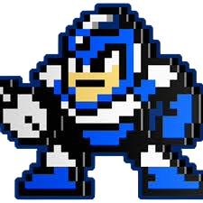
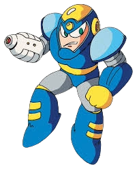

TIPS
- Flash Man’s stage is short but tricky due to slippery floors, enemy patterns, and time-stop mechanics. Mastering the early platforming and enemy handling will make the rest of the stage much easier.
ROLE
- Flash Man’s Special Weapon, the Time Stopper, is a unique system that allows him to halt time in his vicinity for brief periods megaman.fandom.com+1. This ability lets him immobilize enemies before unleashing rapid-fire shots from his right-arm buster, making him appear to move at light speed or teleport. Unlike Time Man, who can only slow time, Flash Man can stop it completely
ABILITIES
- Flash Man’s signature power is the Time Stopper, a system that can completely halt time in his vicinity for brief periods megaman.fandom.com+1. This allows him to freeze enemies mid-motion, making them completely immobile. While time is stopped, he can unleash rapid barrages of shots from his buster on the right arm, appearing to move at “light speed” or teleport between attacks megaman.fandom.com. This ability is considered a perfected form of what Time Man could do, as Time Man could only slow time, not stop it